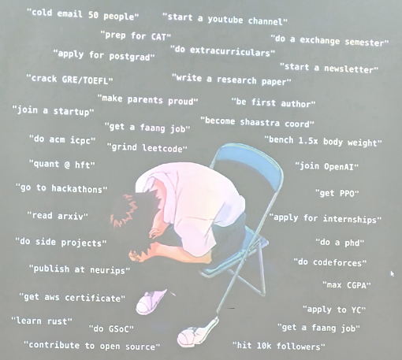
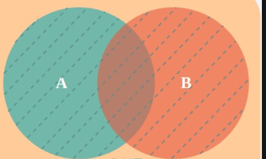

Metric -- something we all consciously / unconsciously use to evaluate things and people -- including our own very selves. The use of metrics in our lives is very dramatic I realized, pretty recently. Metrics are what we use to make decisions, but often these are flawed!
First let us understand the notion of an obligation bias and then generalize the issue using metrics.
Think about what you have been "doing" these days - what you might call as work. Why are you doing what you are doing ? Quite often, the first layer of answers are very short-term and are checkpoint based - for me, it was getting a PhD offer from the best schools in the US (not anymore :)), for some around me it is getting the highest paying job. For people a little older than me, some have the aim of scaling up their company or getting a tenure at an esteemed college or rising up in the corporate hierarchies or something else that people deem "higher" in their field. For kids younger than me it is getting the best rank in JEE or good grades at school or optimizing on a sport skill to get to the next level of tournaments.
Aditya, the founder of Subtrace, puts it very beautifully in this image -

Note that there are two things here - the notion of what is 'higher' or better was NOT DECIDED BY US. On top of that, the idea that we have to climb these ladders were very often not decided by us either -- with some thought it is apparent that the seed of this desire to climb higher up in ladder defined by the society was a mimetic desire that was planted into us and we unconsciously kept chasing it - if u disagree, just question yourself recursively with a "why am I doing this / want this?" - a lot of things turn out to be obligations that we tied ourselves to, because we liked the idea of being better on a particular "metric".
I will take a concrete example that most of us face - the idea of being good at academics in school or college (or being high IQ) is something that kids take a little too seriously because of this - their metric of evaluation is concurrent with the metric that society.
In my opinion though, very often these widely celebrated and well approved metrics are simply wrong OR irrelevant for our specific use cases. Often we pick up metrics that are "easy" to measure rather than what is "correct" -- and this comes with no surprise, one of the sources of biases in human thought is cognitive ease.
Another example - I have heard a lot of people say "Hey working hard" $\equiv$ "Working 12 hours a day". I cannot disagree more (Note : I work more than this) -- this number depends highly on
- What you call as work
- What is the nature of this work
- What you do when you are not doing work
Most often work would mean an explicit contribution like sitting down and coding if you are a software developer OR reading papers if you are a researcher, but I argue otherwise -- I count work as everything that contributes to your goal -- and therefore one should work 24 hours!
But does that mean you code 24 hours without sleep ? NO - in fact you should give yourself enough sleep so that you are more productive. Eating well, meditating, exercising, reading, talking to people about new ideas -- these contribute to work ( at least in my case ). The Sanskrit phrase कर्मणा मनसा वाचा captures this very well -- lit. through work, mind and speech -- all your voluntarily actions should truly align with what leads you to the goal.
But deciding how to achieve this is super hard Paul Graham talks has a nice essay on this. You have to be very thoughtful and honest, since you can trick yourselves in either directions. One might say "I have cut down on meeting people so that I can focus more on my work" -- this might tamper you mental health and lead to unfruitful outcomes, on the other hand someone might say "I am playing video games 2 hours everyday so that I can relax myself enough" -- playing video games might decrease your attention span!
So yeah this is hard ... but the point still remains -- number of hours is an easy metric to quantify - I don't say it is disjoint -- it is some what like this :

If A is giving maximum effort towards your work and B is the number of hours you put in the explicit work, there is some intersection - but by optimizing on the hours you might miss on the effort and vice versa, so the metrics are correlated but not identical. And measuring A is very hard.
Similarly when doing a course in college, learning is correlated but not identical to getting the best grades -- it is a metric that is easy to measure by us and others. Then what is the problem? - is it others evaluating us through wrong metrics - Absolutely NOT - at least in the long run - it is us evaluating ourselves on those metrics - obligating ourselves to optimize unconsciously and on the wrong thing.
Who told you to become the best XYZ? More importantly, do you think you will become the best XYZ by doing what you are doing now ? This is the power of obligation -- this is a very strong sensation from deep within -- I too get it sometimes. Most of the should's are pretty unconscious and trapping -- they trap you into things that are inessential - think about things from the past that you thought were important but turned out to irrelevant for the rest of your life!
NOW CAVEATS:
-
So should we stop working and let the world come to a still - NO! I would personally hate that. One of the facts that gives me immense joy is humans' ability to create great new things through curiosity and sheer determination. All I am saying is choose the right metrics. A lot of goals/decisions in our lives are based on metrics and these goals are further achieved by optimizing on certain other day-to-day, low-level metrics. At both levels choosing the metric is important since it decides the space of your action and also your thoughts. It is easy to trick yourself into thinking that metric X is better due to high praise or metric Y is bad since I will never reach higher up on that! So I think the most challenging and the most important problem of life is designing /choosing your metrics.
-
Above everything, these things apply to folks who have their bare minimum sorted out - sadly a lot of people have to solve their financial and survival problems and sometimes optimizing on these societal metrics might help them rise to a platform where they don't have to worry about these things. But once you are there, I think it is worth coming up with your own metrics :).